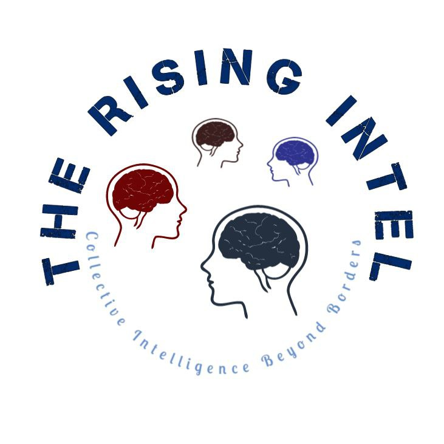

About us
Our Company
 The Rising Intel is the collective
intelligence-oriented consulting firm purposefully created to help human resources managers and people-centered organizations
achieve progressive changes, business improvement, and resourceful community engagement.
The Rising Intel is the collective
intelligence-oriented consulting firm purposefully created to help human resources managers and people-centered organizations
achieve progressive changes, business improvement, and resourceful community engagement.
We excel at creating and managing strategic Diversity, Equity, and Inclusion (DEI) programs. If your organization really mean business, you must certainly reach out today at The Rising Intel .
Company Goals
We are committed to assisting organizations and SMEs in unleashing the collective intelligence surrounding their businesses, bringing about sustainable change, effective business transformation, product development, customer and employees retention, and research-proven "wisdom of crowds". With our CI tool, we to help you facilitate the digital experience your employees need to collaborate, learn, and collectively grow.
Team
We are a team of multidisciplinarians with special focus on organizational behavior, leadership, and decision-making. We use people analytics research methods to identify, gather, and analyze the data that companies utilize to unleash their collective intelligence to its full potential.
